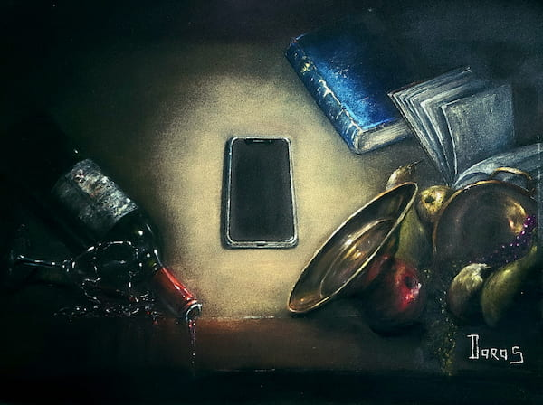
VibrationsDisponible
Une sélection de pastels secs entre natures mortes, marines, fleurs, figures et clair-obscur.

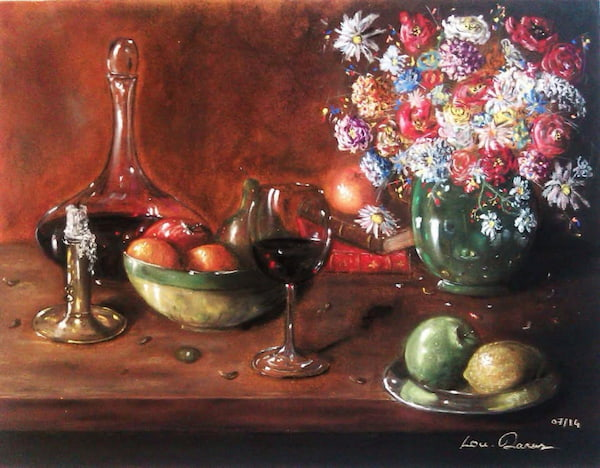
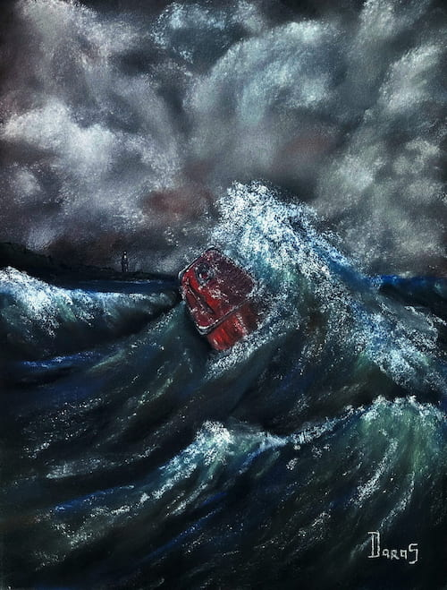
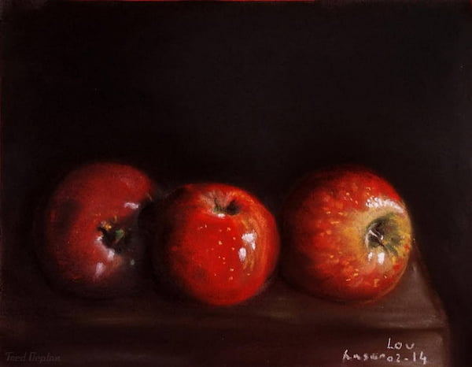
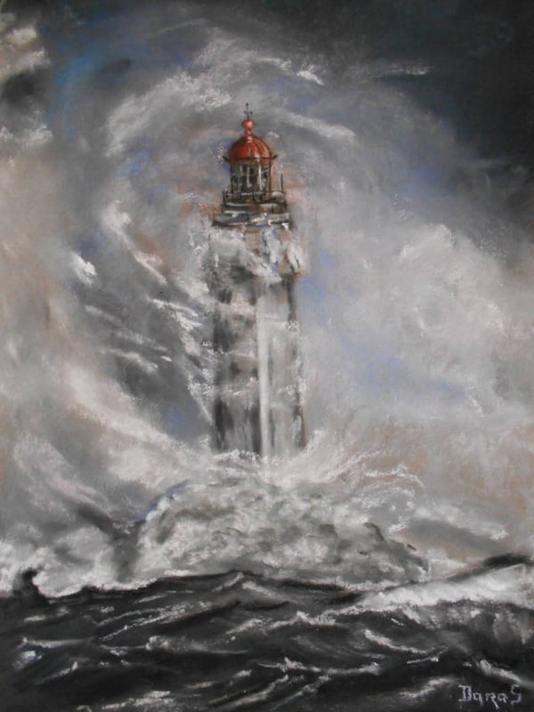
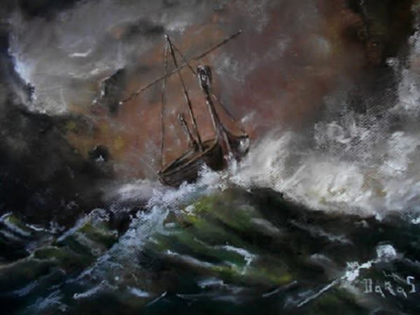
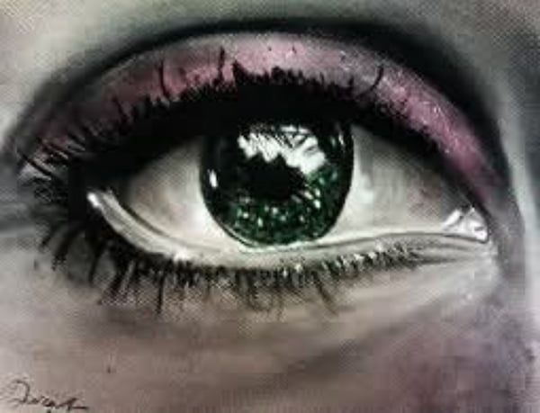
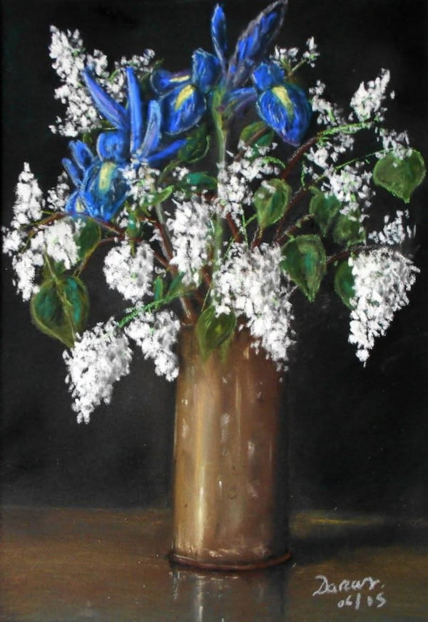
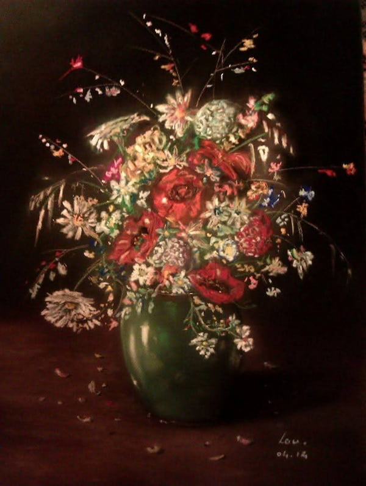
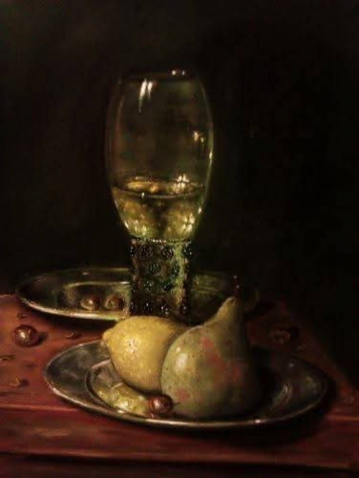
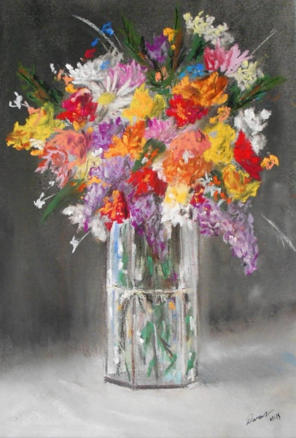
Daras est artiste pastelliste depuis 2013. Le pastel sec permet le mélange des couleurs directement sur le support. Les doigts créent les volumes avec immédiateté, tandis que les touches de lumière apparaissent naturellement.
Le clair-obscur n’est pas une opposition manichéenne. Il rappelle que sans lumière il n’y a pas d’ombre, et que sans ombre il n’y a pas de lumière.
La lumière agit comme une information. Les ombres deviennent des silences, parfois des cris, à l’intérieur de cette information.
Pour une exposition, une acquisition, une commande ou un échange autour d’une œuvre.
ludovicdaras@gmail.com